Context
役割・状況・日時・背景。「疲れたteddy bearにbedtime storyが必要」など。
LLMの定義から、MoE、token生成、prompting、推論時のmemory・latency最適化までを一続きで理解する。講義映像から確認したスライド11枚を添え、講義内容と一次資料による補足は明示的に分離した。
読み分け: 通常の本文・表は講義と公式スライドの再構成である。青・黄の「一次資料による補足／補正」は、講義で省略・保留・単純化された点を原論文や公式文書で補ったもので、講師の発言そのものではない。
冒頭では前2回を復習する。Transformer系モデルは、encoder-decoder、encoder-only、decoder-onlyの3系統に分かれる。
| 系統 | 主な入出力・用途 | 講義の例 |
|---|---|---|
| Encoder–Decoder | 入力textをencodeし、decoderが別のtextを生成する。 | T5、mT5、ByT5 |
| Encoder-only | 文・documentを意味のあるembeddingへ変換し、[CLS]表現などをclassificationへ使う。 | BERT、DistilBERT、RoBERTa |
| Decoder-only | causal masked self-attentionで次tokenを自己回帰生成する。encoderがないのでcross-attentionは除く。 | GPT、LLaMA、Gemma、DeepSeek、Mistral、Qwen |
講義でのLLMは、単にparameterが多いモデルではなく、token列へ確率を割り当て、次tokenを予測する大規模language modelである。現代的な用法ではtextを生成するdecoder-only modelを指し、BERTのようなencoder-only modelはこの定義から外す。
「LLM」という呼称は比較的新しく、2018–2019年ごろには現在ほど定義が固まっていなかった。講義では、現代のLLMの90%以上はdecoder-onlyという概算も示す。
巨大modelへ単純な質問をするたびに全parameterを動かす必要はあるのか。講義は「数学者・物理学者・化学者・歴史家がいる部屋で数学の質問を誰へ聞くか」という比喩を使う。input xからrouter（gate）Gがexpertの重みを決め、expert Eiの出力を合成するのがMoEである。
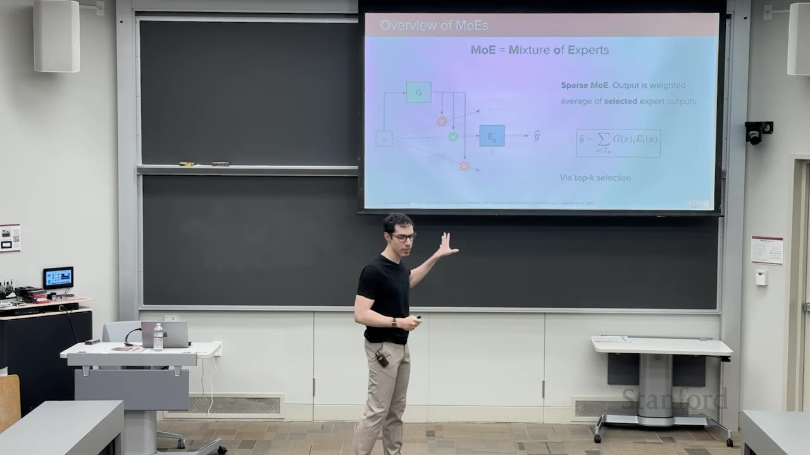
画像の読み解き：左のgate Gはtokenごとのrouting scoreを作り、top-k外の経路を切る。右の総和が全expertではなく選択集合へ限定されることが、総parameter数を増やしながら1 token当たりのactive computeを抑える核心である。
図をクリックすると拡大・移動できる。
| 方式 | routerの扱い | compute上の含意 |
|---|---|---|
| Dense MoE | 全expertに0–1の重みを与える。 | 専門性は分けられるが、全expertを計算するためcompute削減は限定的。 |
| Sparse MoE | top-k（典型的にはk=1または2）だけを選ぶ。 | 総capacityを増やしながら、1 forward passのactive parameterを制御できる。 |
講義は計算量の尺度としてFLOPを紹介する。forward pass中の浮動小数点addition・multiplicationなどのoperation数を数え、Sparse MoEはDense MoEよりFLOPを減らせる。
FLOPはfloating-point operation、FLOP/sは1秒あたりの実行率である。operation数が減っても、expert間通信・memory access・load imbalanceにより実時間が同率で短くなるとは限らない。
decoder blockの候補はmasked self-attention、FFN、normalizationである。講義では、FFNがdmodelから大きなdffへ拡張して戻すためparameterの大部分を占めることから、ここを複数FFN expertへ置き換える。
同じsequence内でもtokenごと、blockごとに選ばれるexpertは異なる。attention headごとにrouterを置くのではない。multi-head attentionの出力をconcatenateしてdmodelへ戻した後、layer固有routerがtop-k expertを選ぶ。
共同学習を素朴に行うと、一部のexpertだけが選ばれ続け、他が学習されないrouting collapseが起こり得る。Switch Transformerの補助lossは、batch内のroutingをuniformへ近づける。
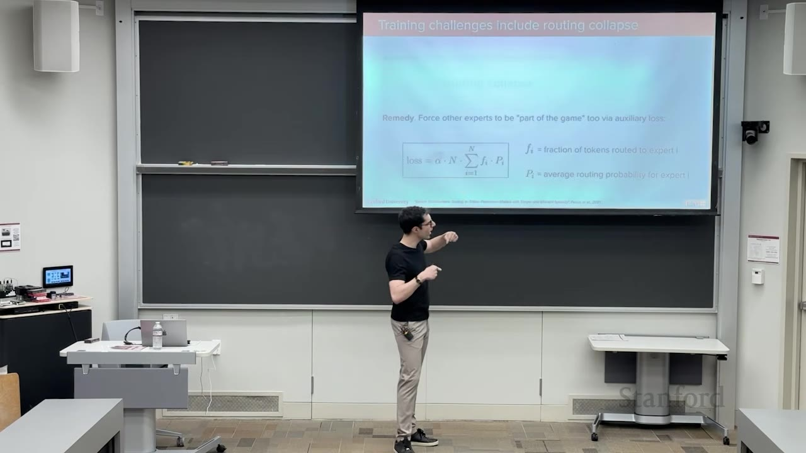
αNΣfᵢPᵢと、fᵢ・Pᵢの意味が投影されている。22:20画像の読み解き：実際の割当比率 fᵢとsoftな平均確率 Pᵢを同時に見ることで、「同じexpertばかりが選ばれる」状態へ罰則を与える。hard assignment自体の微分可能性は、この直後の一次資料補足で区別する。
講義ではmini-batchごとにこれらを計算し、主lossと一緒にbackpropagationすると説明する。dropoutを併用でき、router logitへnoiseを加えて他expertにも機会を与えるnoisy gatingも紹介する。
講義Q&Aではfiの微分が保留された。Switch Transformer論文は、argmax由来のf vectorは非微分可能、softmax確率由来のP vectorは微分可能と明記する。実装では選択件数fをbatch統計として扱い、勾配はPを通じてrouterへ流れる。論文ではα=10−2を使用した。
expert数を増やせば総parameter数とmodel capacityは増えるが、top-kを固定すればactive parameterは抑えられる。Switch Transformerはtrillion-parameterへscaleし、同じqualityへより早く到達するsample efficiencyも報告した。ただし講義が繰り返す通り、parameter・compute・communication・training安定性のtrade-offである。
最後にMixtral論文の可視化を示し、あるlayerで各tokenがどのexpertへ送られたかを色分けする。全tokenが同色ならcollapseの兆候で、複数色へ分散していればexpertが使い分けられている。
decoder-only LLMは[BOS] → A → teddy → bear → is → ...と、生成済みprefixを再入力して次token分布を得る。ここで「どのtokenを選ぶか」はmodel本体とは別のdecoding policyである。
| 方式 | 操作 | 長所 | 限界 |
|---|---|---|---|
| Greedy decoding | 毎stepで最大確率tokenを選ぶ。 | 単純・高速・理論上deterministic。 | 局所最適でsequence全体の最適を保証せず、同じ入力から同じ出力で多様性がない。 |
| Beam search | beam width k本の高確率prefixを保持し、各stepで展開・剪定する。 | greedyよりglobal optimumへ近い候補を探せる。 | 計算・memoryが増え、もっともらしさを優先して創造性に乏しい。翻訳などに向く。 |
| Sampling | 次token分布から確率的にsampleする。 | 自然さ・多様性・創造性を得やすい。 | 低確率の不自然なtokenも理論上は選ばれるため、候補制限が必要。 |
講義例では、最初に0.8のbranchを選んでも後続確率が低ければ、最初は0.2でも後続が高いbranchのsequence確率が上回り得る。beam searchは複数branchを保持してこの局所性を和らげるが、完全探索ではないためglobal optimumを保証しない。
k=4。p以上になる最小集合からsampleする。講義例はp=0.9。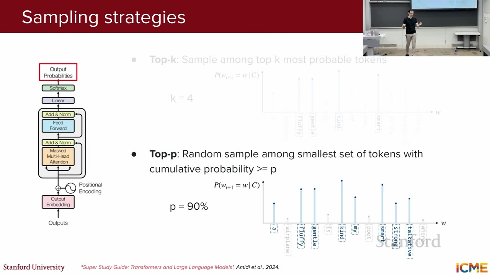
画像の読み解き：top-kは棒の高さに関係なく候補数を4へ固定する一方、top-pは分布の質量を基準に集合sizeを変える。右下の棒グラフは、token順位ではなく累積確率がcutoffを決める点を可視化している。
固定kと違い、top-pの候補数は分布の確信度に応じて変わる。尖った分布では少数、平坦な分布では多数を残す。これらはtraining手法ではなく、学習済みmodelのresponse generation時に使う。
最終hidden stateをvocabulary size次元へlinear projectionしてlogit zを得て、temperature付きsoftmaxで次token確率へ変換する。
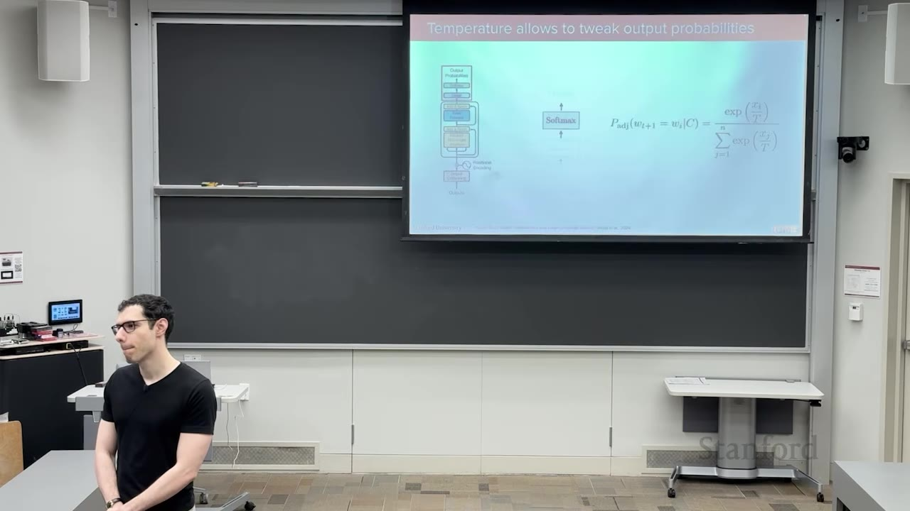
画像の読み解き：Tはtoken候補の順位を直接入れ替えるのではなく、softmaxへ入るlogitの尺度を変える。小さいTは差を拡大し、大きいTは差を縮めるため、同じmodelから生成多様性を調整できる。
| Temperature | 極限・形 | 生成の傾向 |
|---|---|---|
T → 0+ | 最大logitの確率が1へ近づくspiky distribution。 | greedyに近く、保守的・再現性重視。 |
中程度のT > 0 | 元の順位を保ちつつ確率差を調整。 | sampleごとに変化し、多様性とqualityを調整。 |
T → ∞ | 各exp(z/T) → 1なのでvocabulary上のuniform distributionへ近づく。 | 低確率tokenも選ばれやすく、よりcreativeだが不安定。 |
講義の証明は最大logit zkを分母からfactorし、exp((zj−zk)/T)を見る。j≠kなら差は負なのでT→0+で0となり、最大要素だけが残る。T→∞では全項が1となり1/|V|へ近づく。tokenは順序を持たない離散categoryなので、低temperature分布をGaussianとして解釈するのは適切でない。
講義はGPU上の浮動小数点加算順序を直観として挙げた。Thinking Machinesの公式技術記事はさらに、LLM serverでbatch sizeに応じてkernel実装・reduction順が変わるbatch invarianceの欠如が、同一requestから見た非決定性の主要因になり得ると説明する。modelの数学と実装上のbitwise reproducibilityは別問題である。
JSONを求めて失敗するたび再試行するのはnaiveである。guided decodingは、生成済みprefixとschema・grammarから次に許されるtokenだけを残し、invalid tokenの確率を0にする。たとえばJSON先頭なら{、property名の後なら:など、状態ごとに候補を制約する。複数候補がvalidなら、その集合内で通常のsamplingを行う。
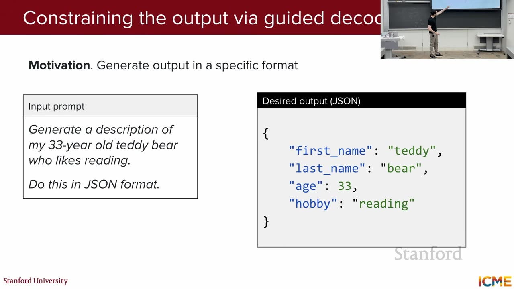
first_name、last_name、age、hobbyを持つ期待出力が映る。1:06:00画像の読み解き：promptでformatを「お願い」するだけでは、property欠落や構文errorを防げない。guided decodingは右側のshapeをschemaやgrammarとして機械的な制約へ変え、違反tokenをsampling候補へ入れない。
Efficient Guided Generationは、regular expressionをfinite-state machineへ、JSON・Python・SQLなどをcontext-free grammar / parserへ対応付け、vocabulary indexからvalid token集合を効率的に取得する。単なる「JSONで答えて」というpromptより、構文的validityを生成過程で保証できる。
context length / context size / window sizeは、1 passでmodelが扱う入力token数を指す同義語として紹介される。現代modelは数万・数十万・million token級を掲げるが、windowが長いほど常に情報利用能力が高いわけではない。self-attentionが見るtoken範囲に対応し、標準attentionの計算量はlengthに対してquadraticなので、前回扱ったsparse attention等の工夫も関係する。
Chromaの2025年technical reportは18モデルを評価し、task complexityを固定してinput lengthだけを増やしてもperformanceが非一様に低下すると報告した。単純なlexical Needle-in-a-Haystackは長文能力を過大評価しやすく、semantic match、類似distractor、haystack構造が加わると劣化が強まる。したがってretrievalでは「全部入れる」より、関連contextを絞る動機がある。
役割・状況・日時・背景。「疲れたteddy bearにbedtime storyが必要」など。
modelに実行してほしい操作。「特定の場所を舞台に物語を生成」など。
instructionへ渡す具体値。「Location: Country of teddy bears」など。
出力条件・safety rule。「疲れたteddy bear向け」「有害contentを生成しない」など。
これは厳密なprompt理論ではなく、system prompt・user query・入力data・policyを目的別に点検するための実務的分解である。
ICLではmodel parameterを更新しない。「learning」は、prompt contextにtaskの記述やexampleを置き、pretrainingで得た能力をその場で引き出すという意味である。
| 方式 | Prompt | 利点 | cost・注意 |
|---|---|---|---|
| Zero-shot | 例を与えずinstructionとinputだけ。 | 準備が少なく、未知分布へinstructionからgeneralizeしやすい場合がある。 | base modelの能力とinstruction品質へ強く依存。 |
| Few-shot | 複数のinput/output exampleを先に示す。 | 期待format・taskを具体的にsteerしやすく、一般にはperformanceが上がる。 | example収集、context token、compute、latencyが増え、有限exampleへ過適合する場合もある。 |
講義のteddy bear例では、TeddyやBobへのqueryとstoryの組を示してから新しいbearのstoryを求める。近年のreasoning modelでは、良い自然言語instructionがfew-shotと同等または上回る場合もあり、「few-shotが常に最善」ではない。
PS promptingは、まずproblemをsubtaskへ分解するplanを作り、次にplanに沿ってsolveする。PS+は計算とintermediate stepを明示するinstructionを加える。ACL 2023論文ではZero-shot-CoTの誤りをcalculation、missing-step、semantic misunderstandingへ分析し、特にmissing-stepを減らす目的で提案された。
最終回答だけでなく中間reasoningを生成させると、多段問題のperformanceが改善し得る。講義例では「bearは2020年生まれで今年4歳。来年は1歳増えるので5歳」とstepを出し、そのpatternをfew-shot exampleとして別queryへ転用する。
講義はCoTの利点として説明・interpretability・debuggingを挙げる。たとえば誤答のreasoningに「現在は2019年」とあれば、contextのdateが誤っていた可能性を追える。一方、token数が増えるためcostとlatencyも増す。
Turpinら（NeurIPS 2023）は、choice順やsuggested answerのようなbiasing featureにpredictionが影響されても、CoTがその影響を述べず、誤答をもっともらしく合理化する例を示した。CoTはdebuggingの手掛かりにはなるが、model内部の「真の思考過程」を保証する監査logではない。
同じqueryから複数のCoT pathを独立sampleし、reasoning部分を除いたfinal answerを抽出してmajority voteする。講義例では「5、5、4」から5を選ぶ。answer位置を最後に固定するinstruction、regex、別LLMによるextractなどで集計する。
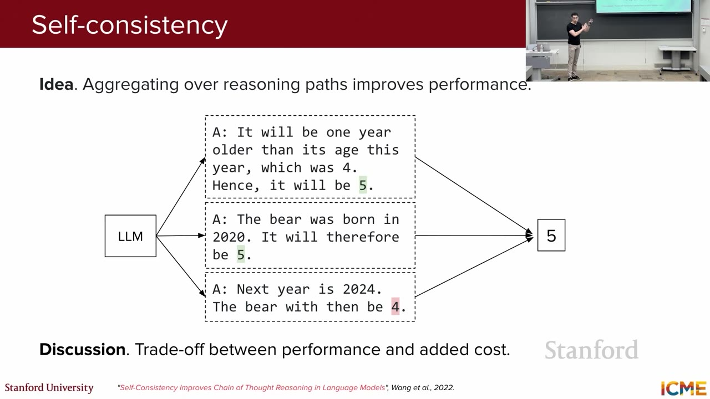
画像の読み解き：同一pathを長くするのではなく、独立した複数pathの最終回答をvoteする点が要点である。図の分岐は並列化できるが、3本なら生成computeも概ね3本分必要になる。
講義は最適化を、結果を変えず冗長計算・memory管理・数式を改善する「exact」系と、architecture・embedding・token predictionを変える「approximation」系に分ける。その後、attention側とoutput token側の順に各手法を配置する。
図をクリックすると拡大・移動できる。
自己回帰生成では、新tokenのqueryは毎回新しく必要だが、過去tokenのkey・valueは既に計算済みである。各layerのK/Vをcacheし、次stepで再利用すれば同じprojectionを繰り返さずに済む。trainingではteacher forcingでsequence全体を並列入力するため、逐次decode時と同じcache問題は通常生じない。
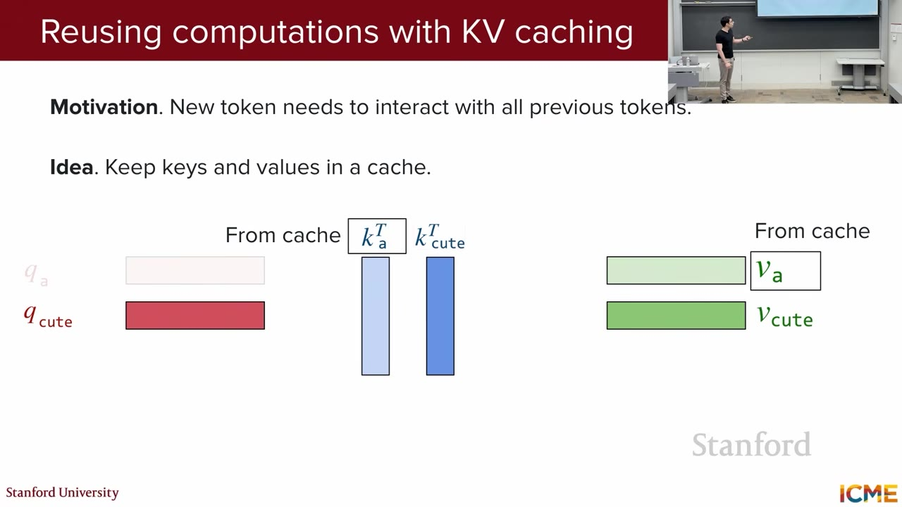
画像の読み解き：赤い新queryに対し、青・緑のK/V列は前stepの結果を保持する。decodeが1 token進むたびに過去全tokenのK/V projectionをやり直す無駄を消す代わりに、sequence長に比例するcache memoryを使う。
Hugging Face TransformersはDynamic、Static、Quantized、offloaded cacheを提供する。cacheは再計算を減らす一方、contextとlayer数に応じてmemoryを消費する。Static cacheはcompileしやすいが未使用slotをmaskする無駄があり、quantization・offloadはmemoryを減らす代わりにthroughputへ影響し得る。
MHAはquery・key・valueを各h head持つ。GQAはh個のquery headをG groupへ分け、group内でK/V headを共有する。G=hならMHA、G=1ならMQAであり、中間のGQAはqualityとKV cache量の折衷になる。
naive serverは生成lengthがEOSまで不明なためrequestごとに最大context長のcontiguous memoryを予約し、internal・external fragmentationを生む。PagedAttentionはOSのvirtual memoryに似てKV cacheを固定size blockへ分け、logical token blockを非連続physical blockへmapする。
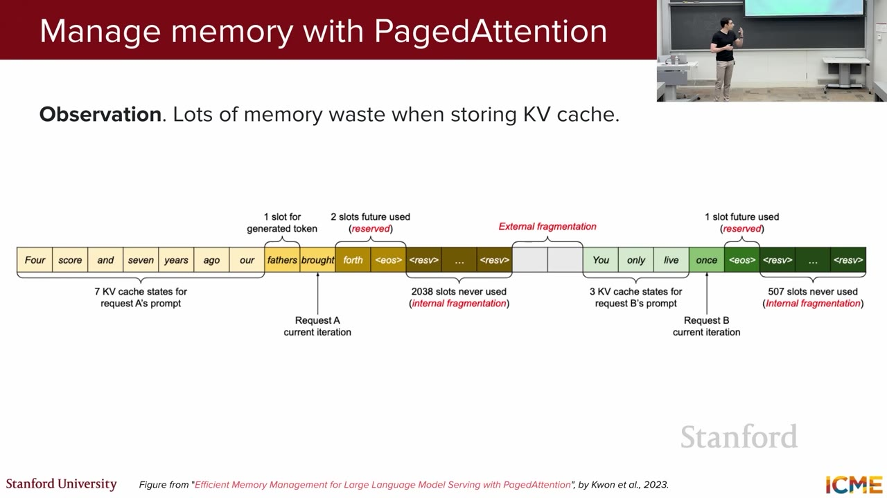
画像の読み解き：sequenceがいつEOSへ達するか不明なため、連続領域を大きく予約すると「block内の余り」と「block間の隙間」が同時に生じる。PagedAttentionはlogical blockとphysical blockを分離し、この図の空白を小さなblock単位で再利用する。
| 無駄 | 意味 | PagedAttentionの対応 |
|---|---|---|
| Reservation | 最大lengthを見越して確保する未使用領域。 | 必要になった分だけ小blockを追加。 |
| Internal fragmentation | 割当block内部の未使用部分。 | 最後のblock程度へ限定。 |
| External fragmentation | 連続領域を要求するため生じる隙間。 | KV blockを非連続配置し、block tableで対応付け。 |
PagedAttention論文はvLLM上でKV cache wasteをnear-zeroへ近づけ、同等latencyで既存systemより2–4倍のthroughputを報告した。効果はlong sequence・large model・複雑なdecodingで大きい。
一次資料: Efficient Memory Management for LLM Serving with PagedAttention
MHAでは各token・各layerについて多数のK/V head vectorをcacheする。DeepSeek-V2のMLAは、hidden stateを低次元latent ctKVへdown-projectし、必要時に別matrixでK/Vへup-projectする。compression matrixをKとVで、さらに全headで共有するため、cacheする表現を大幅に減らす。
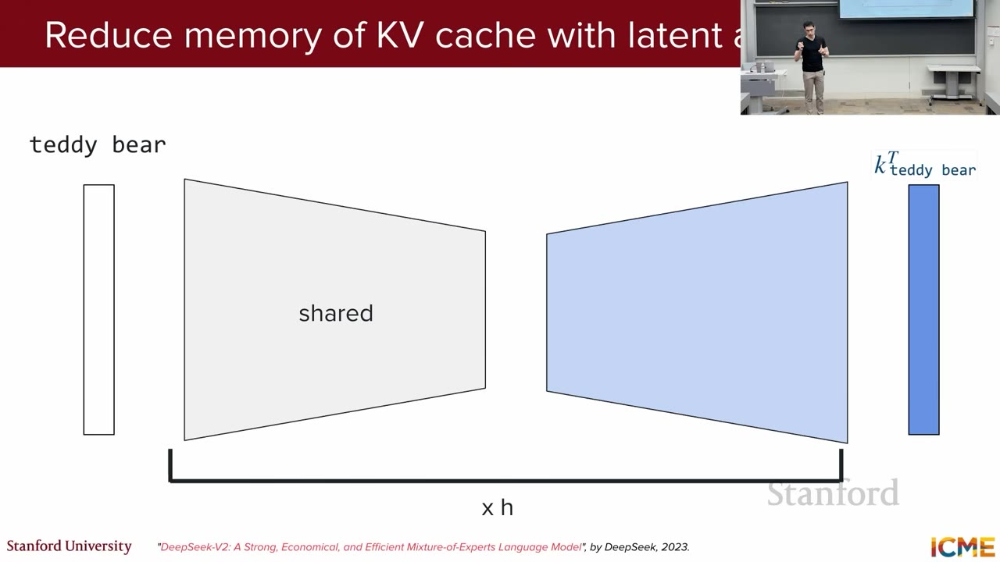
画像の読み解き：cacheへ残すのは右端の大きなhead別表現ではなく、中央の細いlatentである。K/Vとhead間で圧縮表現を共有するため、GQAとは異なるlow-rank方向からmemoryを削減する。
講義は「layerごとにtoken当たり1つの共有表現」と直観化する。DeepSeek-V2論文では、通常のRoPEをcompressed keyへ直接適用するとup-projectionをquery側へ吸収できないため、RoPE用のshared keyを分離するdecoupled RoPEを導入する。実装上はcompressed latentに加え、この小さなRoPE keyもcache対象になる。なおスライド表記の“DeepSeek-V2, 2023”に対し、arXiv初版は2024年5月である。
draft model pがk tokenを高速に自己回帰生成し、target model qへdraft列をまとめて入力する。Transformerは短いcontinuationを並列scoreでき、memory-bandwidth-boundな大modelではk tokenを一括評価するlatencyが1 token評価に近い場合がある。
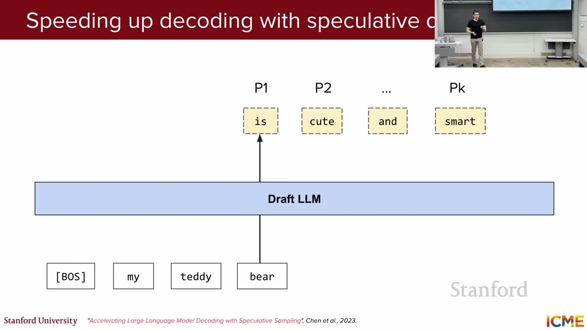
is / cute / and / smart の4 token候補を小modelが順に作る段階が映る。1:42:55画像の読み解き：図の4候補はまだ確定出力ではない。draft modelは安く先読みし、次段でtarget modelが各位置をまとめてscoreしてaccept/rejectするため、qualityの基準をtarget側へ残したまま逐次呼び出し回数を減らせる。
x̃1:kを生成する。q1:k+1を並列計算する。qk+1から追加1 tokenもsampleする。modified rejection samplingにより、最終sample分布はhardware numericsの範囲でtarget model qと一致する。DeepMind論文はChinchilla 70Bでqualityを損なわず2–2.5倍のdecoding speedupを報告した。draftとtargetの一致率が低いとaccept数が減り、speedupも小さくなる。
MTPはshared Transformer trunkの上に、t+1, t+2, …, t+kを予測する複数headを付けてtraining objective自体を変える。test時には追加head群を同一model内のdraftとして使い、main next-token headで検証するself-speculative decodingが可能になる。
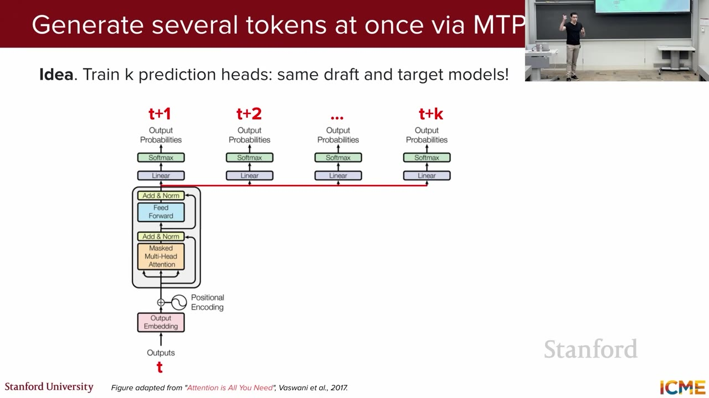
t+1 … t+k の未来位置を担当する複数headを置き、複数tokenを同時に予測する構成が映る。1:47:15画像の読み解き：別のdraft modelを用意するspeculative decodingと違い、MTPはtraining時から同じtrunkに未来token headを持たせる。追加headをin-model draftとして使える一方、training objectiveとarchitectureの変更が必要になる。
| 通常のspeculative decoding | MTP | |
|---|---|---|
| Draft | 別の小model | 同一model内の未来token prediction heads |
| Training | target modelは変更不要 | 複数未来tokenを予測するobjectiveへ変更 |
| Validation | rejection samplingでtarget分布を厳密保存 | 講義で扱う論文実装はgreedy validationで、同じ分布保存式をそのまま使わない |
Gloeckleらはmulti-token objectiveがsample efficiencyを高め、13B modelでHumanEvalを12%、MBPPを17%多く解き、4-token prediction modelで最大3倍のinference speedupを報告した。一方、小modelではbaselineより悪い場合もあり、scaleとhead数に依存する。
発話中に挟まれた質問を、重複をまとめつつ全論点が残る形で整理する。
| 質問 | 講義での回答 |
|---|---|
Router Gとexpert Eはどう学習するか。 | 通常のforward、loss、backpropでjoint trainingする。MoE固有のcollapse対策を補助loss等で加える。 |
| Expertのarchitectureは何か。 | 一般式では任意networkだが、Transformer LLMでは各expertはFFNで、通常FFNをMoE layerへ置換する。 |
Load balanceのfiとPiはいつ計算するか。 | mini-batchをmodelへ通した後にbatch統計として計算し、主lossと合わせてbackpropする。 |
| Dropoutを使えるか。 | 併用可能。関連手法としてrouter scoreへnoiseを加えるnoisy gatingもある。 |
Hard assignmentのfiは微分可能か。 | 講義では保留。原論文ではfは非微分、Pは微分可能で、勾配は後者を通る。 |
| Expert数を増やすとparameterは増えるか。 | 総parameterとcapacityは増えるが、top-kを固定すればactive parameterと1 passのcomputeは制御できる。 |
| MoEはattention headごとにあるのか。 | headとは独立。head出力を連結・射影した後に1つのlayer-specific routerがtokenをexpertへ送る。 |
| 各blockにexpertがあり、weightは共有するか。 | 通常各blockに別のrouter・expert群がありweightは共有しない。layerごとに別expertが選ばれ得る。 |
| Inferenceでroutingはいつ決まるか。 | masked self-attention後のcontextualized token表現をrouterへ入れ、softmax確率のtop-kを選ぶ時点。 |
| Samplingはtraining時か。 | ここでのsamplingは学習済みmodelのresponse generation時。trainingでは予測分布とground-truth labelをlossで比較する。 |
| 低temperatureをGaussianとして考えられるか。 | tokenは順序のない離散categoryなので、連続x軸を持つGaussianより「最大候補へspikeする」と理解する。 |
| Context lengthはself-attentionが見る範囲か。 | その通り。長くなると標準attentionのquadratic complexityが効き、sparse attention等の工夫が必要になる。 |
| Self-consistencyが良いとどう判定するか。 | ground truth付き算術・数学benchmark等で評価する。answer抽出は末尾指定、regex、別LLMなどで行う。 |
| 複数CoT sampleは互いをcontextへ入れるか。 | 入れず、同一requestから独立に並列sampleする。最後にanswerだけを集約する。 |
| TrainingでもKV cacheを使うか。 | teacher forcingで全tokenを一括処理するため、逐次generationと同じ意味のKV cachingは通常不要。 |
| KV cache削減にsparse attentionを使えるか。 | 別の選択肢ではあるが、講義の問いはK/V head数に着目し、GQA/MQAを答えとした。 |
| MLAのlow-rank次元は学習で決まるか。 | 次元sizeは固定のarchitecture design choice。layer間で変えることも可能だが、実装では同一値を使うことが多い。 |
| Speculative decodingのrejectはrejection samplingか。 | その理解でよい。accept/rejectとresidual再sampleでtarget分布を回復する。 |
| なぜdraft列の後ろに追加位置もtargetへ入れるか。 | 1回のtarget forwardでqk+1も「無料で」得て、draftが全acceptならさらに1 token進めるため。 |
| 課題 | 手法 | 中心idea |
|---|---|---|
| 総parameterを増やすとcomputeも増える | Sparse MoE | tokenごとにtop-k FFN expertだけactivateする。 |
| 出力が単調・不自然・format違反 | Sampling / temperature / guided decoding | 分布の多様性とvalid token集合を別々に制御する。 |
| Taskをweight更新なしで適応させたい | ICL / Plan-and-Solve / CoT / self-consistency | instruction・example・reasoning path・voteで推論をsteerする。 |
| 過去tokenのK/Vを再計算する | KV cache | 過去K/Vを保存して再利用する。 |
| KV cacheが大きい | GQA / MLA | K/V head共有、低rank joint compression。 |
| Serving memoryが断片化する | PagedAttention | 固定size blockを非連続配置してlogical/physical memoryを分離。 |
| 大modelが1 tokenずつ逐次decodeする | Speculative decoding / MTP | 複数候補をdraftし、大modelまたはmain headでまとめて検証する。 |
講義全体の軸は、LLMを「巨大なdecoder-only model」として終わらせず、どのparameterを動かすか、どのtokenを選ぶか、どのcontextを渡すか、どの計算・memoryを再利用するかへ分解することにある。quality、capacity、latency、throughput、memory、costは常にtrade-offであり、手法名ではなくbottleneckとの対応で選ぶ必要がある。